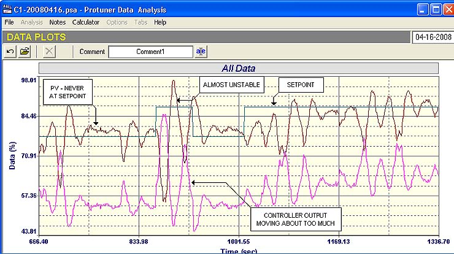
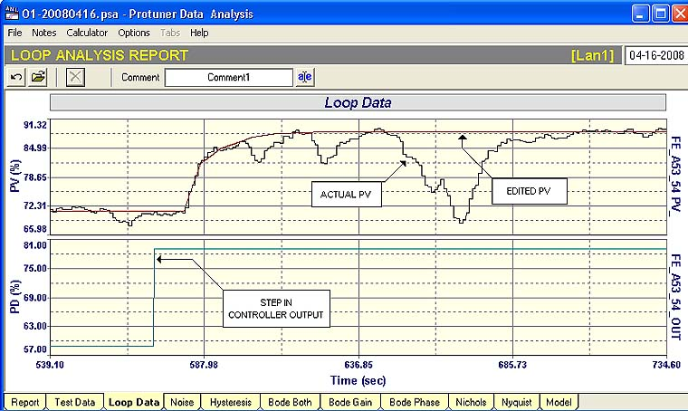
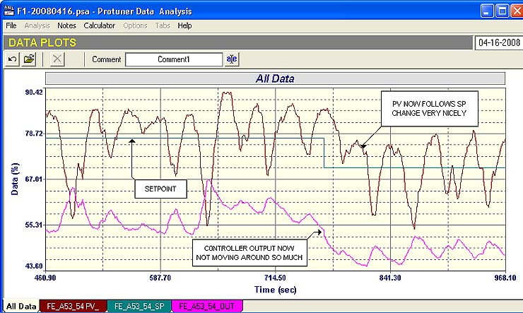
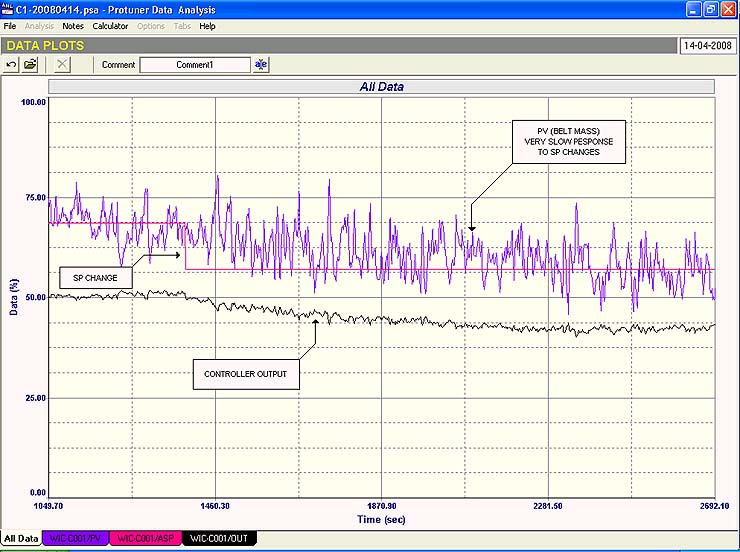
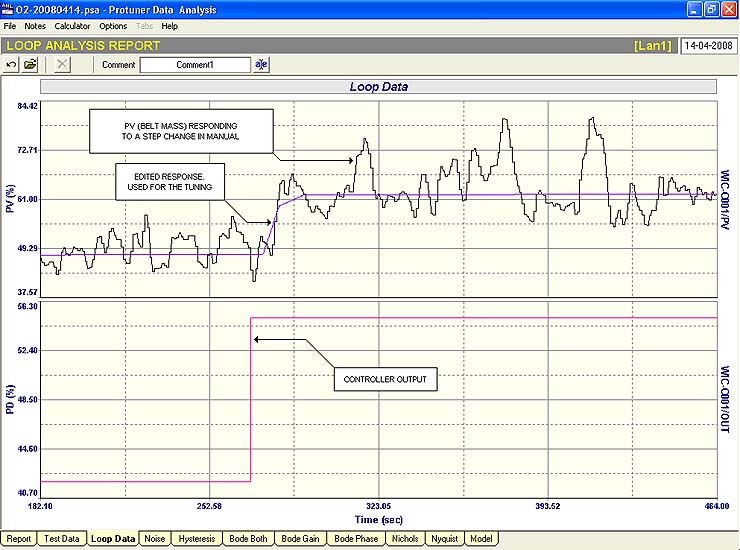
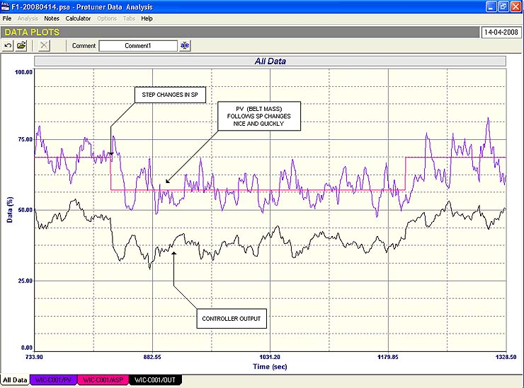

|
| [Home] [About us] [Contact us] [Training] [Optimisation services] [Protuner] |
| [Loop signatures] [Case histories] |
|
Control Loop Case History 103 Peculiarities and differences in control specific to various industries was discussed in the previous Case History 102 article. At the end of the article a specific case of problems encountered a mining mineral processing plant was discussed. Some more examples of some of the interesting problem loops found in the same plant are given in this article. In mineral processing, like in most other continuous process plants, it is very important to try and keep a constant throughput. This starts with the milling circuit, where one must try and provide a constant feedrate of ore into the mill. The immediate problem that occurs here is that conveyor weightometers are extremely noisy, particularly in the case of autogenous mills where the large rocks are used to crush the smaller ones, and no steel balls or rods are used. Previous articles have covered noise in detail, and how the worst problem associated with it, is that plant personal mistake it for instability, and try and mask it out by applying enormous filters which themselves result in further serious problems. Due to the lack of understanding on how to deal with noise, the average conveyor feedrate control loop ends up being very badly tuned with extremely poor performance.  Fig. 2 Figure 2 shows a closed test with the original tuning, on the feedrate control of a mill on one of the plants on the mine. This is a particularly interesting loop from the noise point of view, as the noise on this loop contains irregular, extremely low frequency, large amplitude components. As can be seen in the figure, the original tuning was extremely poor, with too much gain causing the loop to almost go into oscillation at times, whilst taking a very long time to get the process to a new setpoint on changes. In fact it could be said that the process was never really at setpoint. This is very bad for good milling. How does one deal with a noisy process like this. Firstly filtering is completely out. To try and filter out large amplitude low frequency noise like this would result in a filter so large that it would destroy any good control. Therefore one must try and tune without a filter.  Fig. 3 Figure 3 shows how this is achieved, using a step change with the controller in manual. One edits the response to eliminate the noise and tunes on the edited curve. Typically weigh feeders have very short time constants (in the order of only a few seconds). However they are also in most cases deadtime dominant, which is another major reason, why they are so badly tuned, as very few people know how to deal with deadtime dominant processes. Correctly tuned weighfeeders generally end up with a tuning that has very small proportional gain, and a fast integral; very similar to flow loops. Generally even though the gain has been drastically reduced to cope with the large deadtime, this still results in good and relatively fast control. The low gain actually results in a huge bonus, as the noise is not amplified as it passes through the controller, but is actually diminished, so it has little effect on the output of the controller and hence on the final control element.  Fig. 4 The final closed loop test is shown in Figure 4. The average of the feed into the mill is now being kept at setpoint extremely well. The response to a step change in setpoint is nice and fast, and the controller output is not responding to the noise at all badly; so the final control element (a vibratory feeder), is not being adversely affected. In this particular case there was an additional problem as the mill dilution water flow was being ratiod directly from this feed. The high noise content was then being fed directly to the setpoint of the flow control through the ratio multiplier. The setpoint was then responding to the noise. Therefore if one was to tune the dilution water flow controller even reasonably well, it would result in the flow control valve responding to the low frequency high amplitude noise which would probably drastically shorten the valve life. This problem was quickly overcome by rather using the setpoint of the feedrate controller as the input to the ratio setpoint. One could then be confident that with the good control of the feedrate following the setpoint, the dilution water would be added in the correct ratio. Another very interesting problem loop was a density control of a thickener that never worked. The control was based on changing the outlet flow rate which apparently should change the slurry density. Although this should have some effect over a very long period, I personally felt that control strategy was not viable, but the process expert was absolutely convinced that the loop should operate perfectly well. We first tried a closed loop test with existing tuning parameters, and made a large setpoint change. The controller output moved quite a bit, but the density didn’t change. Eventually we put the controller into manual and opened the valve fully. After 4 hours the density had still not changed. I think this proved that the control was not workable. The big problem on this particular loop is that there didn’t seem to be an alternative strategy which could be used. Normally one can add water to slurries to affect density, but in this case the metallurgists did not want to do that, as the whole point of a thickener is to get rid of water. At time of writing the problem has still not been resolved. As weigh feeder mass control systems are invariably so badly tuned, the last example is also of such a control, as I think it is useful for people to see a couple of examples of the tuning strategy. This mine was in fact quite unique insomuch as they did not use filters on these loops, as is found on so many other similar plants.  Fig. 5 Figure 5 shows an “as found” (i.e. with the original tuning parameters) closed loop test This loop is more typical than the previous one of the type of noise one encounters on milling feeders. The noise is still of high amplitude, but it has a higher frequency, whereas the earlier one had that unusual very low frequency component in it (refer Figures 1 – 4). It can be seen in the test that the response to a setpoint change was extremely slow, taking over 20 minutes to fully flow a small setpoint change.  Fig. 6 Figure 6 is of a section of the open loop analytical and tuning test, showing the edit that was performed to eliminate the noise for the tuning. Figure 7 is the final closed loop test using the new tuning. It can be seen how well it is now working, with response to setpoint changes only taking a few seconds.  Fig. 7 People often think their controls are working well as they don’t know how to test tuning. To give a typical example, I am writing this section of the article during a lunch break whilst doing the practical section of a training course on a remote mine. When we started this morning on the testing, the delegates were looking for a loop to tune. The plant was running nice and smoothly (which is more often than not, unusual for mining plants). They were flipping through one control loop after another remarking that they all seemed to be working well and didn’t need tuning. ( They should rather have said that the loops didn’t need optimising, of which tuning is a small part). Eventually I stopped them on a simple reagent addition flow control that they said was working very well, and asked them why they thought it was well tuned. The answer was that the PV was on setpoint. The SCADA screen also included a small “tuning window” which shows a relatively short term trend of the PV, SP and PD (controller output). (These windows are usually running at between a 2 and a 5 second update time and are generally not great for working with.) This window also showed the PV on top of the SP. Surely this proves how good the control is? All I did then was to ask them to make a SP step change. The metallurgist in charge was concerned about this, but eventually allowed a 1% change to be made (which is a very tiny change for analytical purposes). Anyway we stood there for 30 minutes before the flow finally got down to setpoint. The class was now convinced that the control was not good, but was in fact terrible. After analysing the loop, which included finding 8% hysteresis on the valve, we then tuned it with a slow tune to keep valve reversals to a minimum. The PV now takes only a few seconds to respond fully to the 1% setpoint change. The moral of this story is that one cannot
judge control performance by looking at steady state trends.
A senior control engineer at a large chemical plant in
the Another major problem in all industries is that operators have very little understanding of feedback control. The quality of operators problem are again very industry dependent. Some industries have very high level operators, and some can get away with operators that have a very low level of education. For example in the nuclear power industry many operators are highly qualified with degrees, and in the mining industries, a lot of the operators have not even reached Matriculation school level. However in my opinion, most operators, irrespective of qualifications, learn by experience to run the plant, and to make product reasonably well. Many of the less qualified ones develop good instincts, but very often have little understanding of the process, and generally none of the control. They are often highly suspicious of the controls, and as mentioned in previous articles, they do not trust the C&I people. It is very bad to antagonise an operator, because they can really go out of their way to mess up optimisation efforts. It is therefore very important when optimising work is being performed to get operators on your side. I believe it is also essential that they should receive some training and mentoring so they can know how the controls operate and their capabilities. I have found that once an operator realises how much well optimised controls can help him to achieve his production targets, he becomes extremely enthusiastic, and will cooperate fully with the optimisation team. Another major problem which is hitting all segments of the South African process industries, is the large brain drain from the country, and the loss of scarce, and important skilled and experienced people. As mentioned earlier, optimisation requires intelligent people, and it takes a long time to build up the necessary experience to be really skilled in this field. I believe that this problem will be exacerbated over the next few years, which bodes ill for our industries. Michael
Brown is a specialist in control loop optimisation, with many years of
experience in process control instrumentation. His main activities are
consulting, and teaching practical control loop analysis and
optimisation. He gives training courses which can be held in clients'
plants, where students can have the added benefit of practising on live
loops. His work takes him to plants all over South Africa, and also to
other countries. He can be contacted at:
|